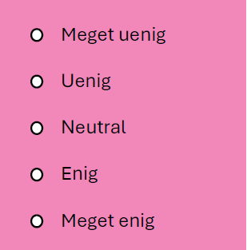

Cambridge Analytica skandalen - informatik
I denne del er formålet at lave en app, hvor man kan læse om Cambridge Analytica skandalen, OCEAN-modellen og tage en OCEAN test.
Udsagn fra OCEAN personlighedstest
Du har tidligere i Fælles - opgave 3 taget en personlighedstest, hvor du har forholdt dig til følgende 20 udsagn:
| I keep in the background. | I have frequent mood swings. | I am not interested in other people’s problems. | I talk to a lot of different people at parties. |
| I am not interested in abstract ideas. | I make a mess of things. | I sympathize with others’ feelings. | I have a vivid imagination. |
| I feel others’ emotions. | I am relaxed most of the time. | I get chores done right away. | I am not really interested in others. |
| I do not have a good imagination. | I am the life of the party. | I often forget to put things back in their proper place. | I don’t talk a lot. |
| I like order. | I have difficulty understanding abstract ideas. | I get upset easily. | I seldom feel blue. |
Du har nu fire udsagn i hver kategori. Til hvert udsagn kan man svare:

Et udsagn kan være enten "+keyed" eller "-keyed". Det betyder følgende:
For + keyed items, the response "Very Inaccurate" is assigned a value of 1, Moderately Inaccurate" a value of 2, "Neither Inaccurate nor Accurate" a 3, Moderately Accurate" a 4, and "Very Accurate" a value of 5.
For - keyed items, the response "Very Inaccurate" is assigned a value of 5, Moderately Inaccurate" a value of 4, "Neither Inaccurate nor Accurate" a 3, Moderately Accurate" a 2, and "Very Accurate" a value of 1.
Once numbers are assigned for all of the items in the scale, just sum all the values to obtain a total scale score.
Det vil sige, hvis man har et "+keyed" udsagn i kategorien "Openness", så vil det trække op i den samlede "openness"-score, hvis man svarer "meget enig". Og omvendt hvis man har et "-keyed" udsagn i kategorien "Openness", så vil det trække ned i den samlede "openness"-score, hvis man svarer "meget enig".
Implementation af app
Du skal nu have udvidet din app, så man rent faktisk kan tage en OCEAN test (bestående af de 20 spørgsmål).
Se denne video:
Se denne video:
Den næste opgave kan eventuelt springes over.
Ekstra udfordring (bruger matematik)
I denne del indgår der lidt matematik. Man behøver ikke at forstå det hele, men man får brug for at lave et par beregninger i App Lab ved hjælp af nogle formler.
Scoren for O, C, E, A og N bliver et tal mellem \(4\) og \(20\). Og gennemsnittet af scoren bliver et tal mellem \(1\) og \(5\). Når man tager OCEAN personlighedstesten ("Short Personality Test") på Cambridge Universitets hjemmeside, så vises resultatet til sidst som en procentsats. For eksempel får man \(50 \%\), hvis ens score rammer middelværdien. Det skal vi prøve at efterligne.
Vi gør nu følgende:
- Antag, at hver af de fem gennemsnitlige scores er normalfordelte:
\[ X \sim N(\mu, \sigma) \]
I artiklen The Mini-IPIP Scales: Tiny-yet-Effective Measures of the Big Five Factors of Personality kan man finde følgende bud på middelværdien \(\mu\) og spredningen \(\sigma\) for hver af de fem scores (Table 1. Mini-IPIP (20-items)):
| Kategori | Middelværdi \(\mu\) | Spredning \(\sigma\) |
|---|---|---|
| O | \(3.70\) | \(0.73\) |
| C | \(3.42\) | \(0.78\) |
| E | \(3.28\) | \(0.90\) |
| A | \(4.01\) | \(0.69\) |
| N | \(2.54\) | \(0.80\) |
Man kan nu bruge disse middelværdier og spredninger til at standardisere hver af de fem scores:
\[ Z = \frac{X-\mu}{\sigma} \tag{1}\]
Disse scores vil nu være standard normalfordelte:
\[ Z \sim N(0, 1) \]
Denne stump JavaScript kode
function GFG(x) {
var T = 1 / (1 + 0.2316419 * Math.abs(x));
var D = 0.3989423 * Math.exp(-x * x / 2);
var cd = D * T * (0.3193815 + T * (-0.3565638 + T *
(1.781478 +
T * (-1.821256 + T * 1.330274))));
if (x > 0){
return 1 - cd;
}
return cd;
}
stammer fra geeksforgeeks ("Approach 2: Using Taylor Series Expansion") og kan bruges til at beregne sandsynligheden for, at en standard normalfordelt stokastisk variabel \(Z\) er mindre end eller lig med \(z\). Det vil sige sandsynligheden
\[ P(Z \leq z) \]
hvor \(Z\) er standard normalfordelt.